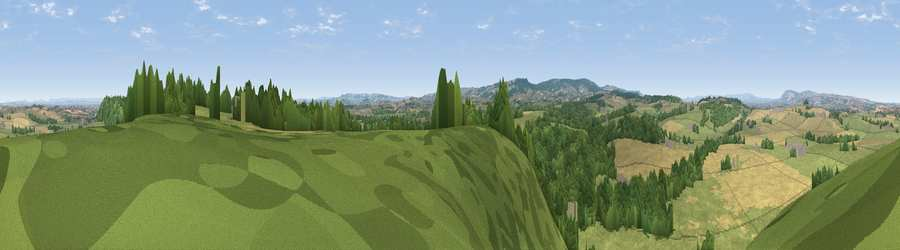

Viewpoint near Hatch Beauchamp
#12183 in England · top 29% of its area beats it · near Hatch Beauchamp · path 293 mWhere it is
The exact computed spot (ST 30275 21225). Click the marker for map links.
Public access: the nearest public right of way is about 293 m away — the final stretch may cross private land. Computed from Natural England's CRoW access layer and OpenStreetMap rights of way — not the legal definitive map. Always verify locally.
The view, rendered

A 360° render of this exact spot computed from the terrain model, tree cover and land cover — summer colours, afternoon light, calibrated against photographs of famous viewpoints. Real trees, hedges and buildings will differ in detail.
The panorama
Grey silhouette: terrain skyline in each direction (720 bearings, Earth curvature and refraction included). Dashed green: skyline with trees (+15 m) and buildings (+8 m) as obstacles. Blue strip: how far the ground is visible on each bearing.
Where the view opens
Wedge length = distance to the farthest visible ground on that bearing (vegetation-aware). Rings at 10, 25 and 50 km.
What fills the view
54% grassland · 25% woodland · 20% cropland ·
Angular shares of the visible panorama (visual magnitude), not map area. Landscape diversity 0.45 (0–1 Shannon).
Key numbers
More beautiful places nearby
The staircase of upgrades: each row has a higher view potential than everything closer. Driving times are estimates from straight-line distance, calibrated against real road routing — check an actual route before setting out.
| Place | Direction | Drive | Score |
|---|---|---|---|
| Crimson Hill | ENE · 1 km | ~2 min | 62.0 |
| Viewpoint near Curry Mallet | ENE · 3 km | ~8 min | 68.0 |
| Viewpoint near Buckland St. Mary | SSW · 6 km | ~13 min | 72.2 |
| Viewpoint near Buckland St. Mary | SSW · 6 km | ~13 min | 77.3 |
| Viewpoint near Hewish | SE · 15 km | ~27 min | 78.5 |
| Cothelstone Hill | NW · 16 km | ~28 min | 82.1 |
| Viewpoint near West Bagborough | NW · 18 km | ~31 min | 84.3 |
| Wills Neck | NW · 20 km | ~33 min | 85.7 |
50.98619, -2.99472 · source: screening · position refined by local search. Computed location — check access rights before visiting.